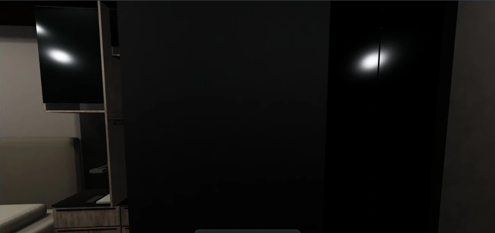
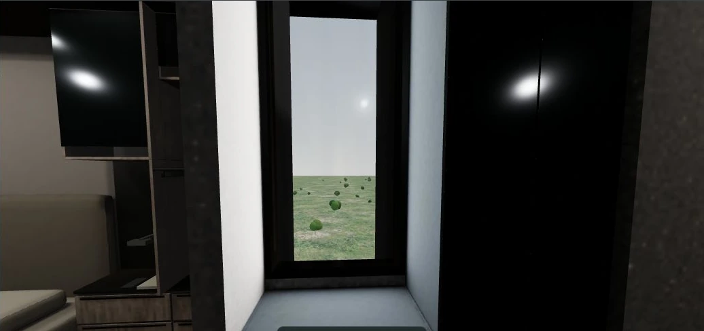
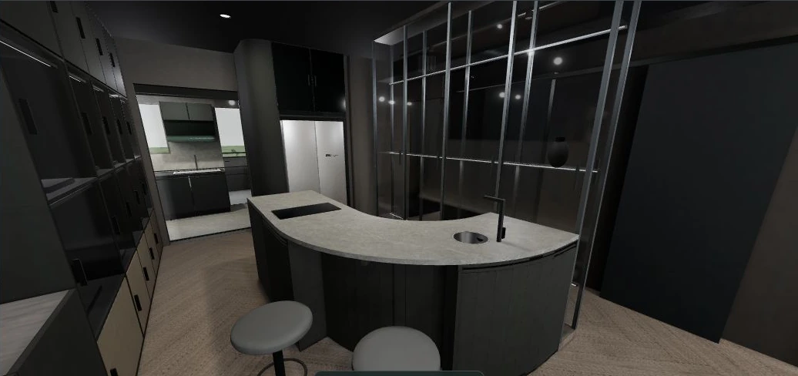
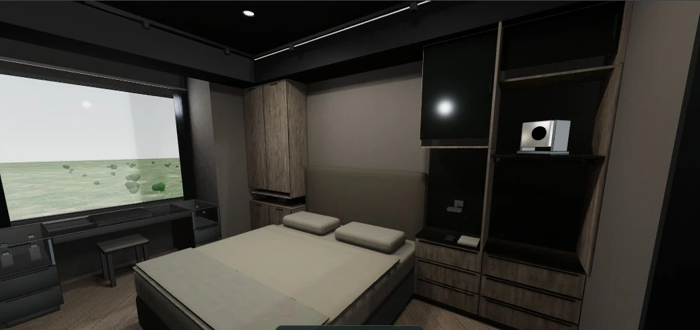
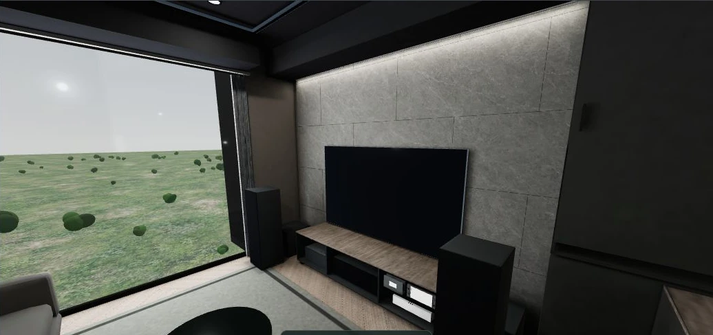
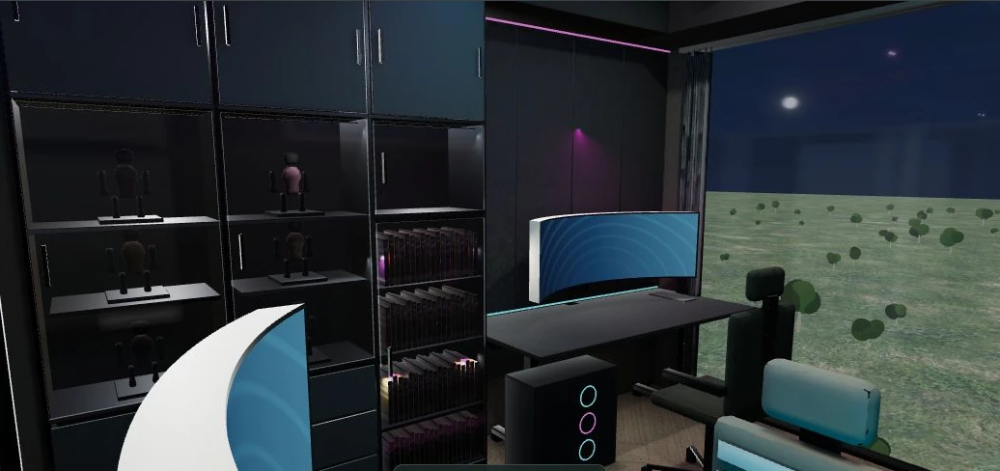

先核對房子，再校準風格
格局與開口以來源平面、客變圖與廚具圖核對，後續業主明示變更仍優先；AI只作材質、色調、家具細節與光影參考。此頁是模型複核紀錄，不能取代施工圖或丈量。
更衣室窗沒有理由被封住。
本輪發現窗組在凹槽中放錯位置，房門鉸鏈亦與原平面相反。畫面中遮窗的大黑面主要是打開的門片。CW01校正窗位與門向，保留原圖有依據的窗旁高櫃、窗下矮櫃。
本輪發現窗組在凹槽中放錯位置，房門鉸鏈亦與原平面相反。畫面中遮窗的大黑面主要是打開的門片。CW01校正窗位與門向，保留原圖有依據的窗旁高櫃、窗下矮櫃。
同一視角的實際 3D


窗位依圖紙配準；寬70cm、窗台距地95cm、窗頂距地245cm仍為既有模型暫定值，未取得窗表。柱前高櫃在窗的右側，未占窗洞。門洞維持原84cm模型值。
整體風格判斷
後續SF01已依業主採用指示細化中島曲面、櫃面反射及沙發床品。查看六版同視角前後比較。下方圖片與「優先細化」屬CW01當時的問題紀錄，保留作來源。
方向仍是現代工業風。霧黑天花、中灰牆、灰石、低紅棕木地板與金屬玻璃框架已成立。現在限制擬真度的是曲面、軟包及反射層次；繼續整屋壓黑會讓收納與牆面黏成一片。




逐房結果
| 空間 | 配置／來源核對 | 美感與待核事項 | 本輪判斷 |
|---|---|---|---|
| 玄關 | 核對入口、柱位與收納配置；版本差異保留。 | 黑色門片與拉手偏密，可整合分縫；懸吊衣桿不是落地柱。 | 材質／細節建議 |
| 客廳 | 灰石主牆、固定電視與靠窗沙發沿用業主決定；V4／V5旋轉電視保持停用。 | 保留石牆、木地板、沙發的明暗差，避免展示框亮成鍍鉻。中島旁留白是已接受安排。 | 風格方向符合 |
| 中島 | V1／V3圓弧＋頂天玻璃櫃與兩外弧席；V2長中島，無互相混用。 | 弧面分片與垂直折線過強。建議連續曲面蒙皮、操作門片保留合理分縫；施工工法另核。 | 優先細化 |
| 廚房 | 對照9/1廚具平面及A／B／C立面，半嵌SMI洗碗機、瓦斯爐、四門餐櫃、三台 Best 電器收納機及黑／銀分區一致。 | 85cm圖面走道與83.5cm模型差異待丈量；窗輪廓未標尺寸。已下單銀色櫃體保留。 | 尺寸待核 |
| 主臥 | 窗位、床位與玻璃展示化妝桌／隱藏鏡維持。 | 床品和枕頭輪廓仍偏方硬，櫃面亮斑強；優先調整軟包和表面粗糙度。白色投影幕是設備。 | 優先細化 |
| 更衣室 | CW01已校正柱旁凹槽窗位與房門鉸鏈；窗旁高櫃、窗下矮櫃保留。 | 模型的窗寬70／窗台95／窗頂245cm尚無窗表，不視為實測。掛衣仍是簡化造型。 | 已修正固定條件 |
| 雙人書房 | V1～V5保留CP02錯向雙桌、公仔、漫畫與青藍紫紅LED；V0電子琴原案保留。 | 須分日常工作光與夜間展示光看效果，不能用LED關閉畫面判定沒有賽博風。座椅與主機細節可深化。 | 分情境核對 |
| 收藏／展示 | 獨立收藏室與開放收納的版本差異保持；展示與備藏用途分開。 | 部分黑櫃內暗部合併，建議局部層板照明與淺一階背板，勿全屋抬曝光。 | 照明層次建議 |
| 主浴 | 浴缸、馬桶及浴櫃與主浴位置核對；濕側滑門仍是既有避撞提案。 | 玻璃反射與金屬過亮處需校準；門型、窗扇與防水／五金待設計師核定。 | 工程待核 |
| 客浴 | 維持無淋浴原案，原位備品櫃、手機平台與抽取式紙盒保留。 | 檯面與櫃體明暗應分開，避免整區一片灰；不根據AI新增淋浴或外窗。 | 配置保留 |
| 儲藏室 | 有門搭配開放層架的方案保持；取景須對照門開關狀態。 | 關門時只拍到門板屬視角／狀態問題；不據此判定層架遺失。紙箱有效尺寸仍待實量。 | 補核使用情境 |
| 後陽台 | 核對與廚房相接位置、洗衣設備及外側開口；尺寸尚待現場。 | 室外草地樹群是暫時背景，不是真實14樓窗景；不恢復已停止的窗景模擬工作。 | 現場待核 |
檢視範圍與限制
檢視六版、每版12空間、各5個既有相機，共360張實際WebGL日景取樣；另補門片、滑鏡、儲藏開門與書房夜間LED情境。AI以十二空間代表圖比對風格，沒有把全212張AI重新驗收或生成。
更衣室各版另作181個門片轉動樣本與關門／全開視線測試。Blender與網頁幾何同步，僅重算更衣室表面的四組間接光及更衣室反射；其他房間光照、共用地坪光照沿用。網頁仍是靜態烘焙，門片移動時不重算完整陰影。
其他房間未再確認到同等明確的遺失外窗或被櫃體取代的開口；這不是整屋無錯保證。未標外窗高度、各窗開扇、窗簾、管道外包絡、施工完成面、公差與設備散熱仍需設計師現場核對。V4／V5維持停用。